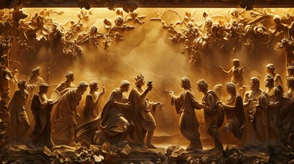
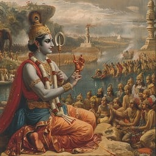
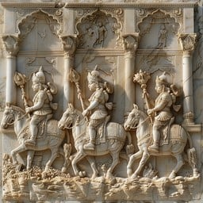
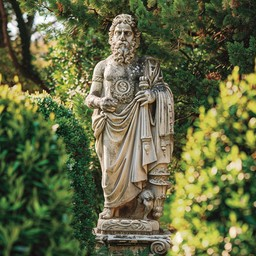

Exploring the Echoes
Mythological Themes in Greek and Indian Cultures.
Greek and Indian mythologies are foundational to ancient storytelling, each weaving intricate narratives of gods, heroes, and legendary adventures that have captivated societies for millennia. Greek mythology unfolds the dramas of Mount Olympus, where deities like Zeus and Athena personify life's facets, and heroes such as Hercules and Odysseus undertake epic quests against formidable adversaries.
Conversely, Indian mythology reveals through the sweeping epics of the Mahabharata and Ramayana, exploring cosmic conflicts among gods and demons. Figures like Vishnu and Shiva are revered for their roles in creation, preservation, and destruction, reflecting profound cultural values and universal themes like love, courage, and the eternal struggle between good and evil.
Despite originating from distinct cultural and geographic milieus, both Greek and Indian mythologies share a profound narrative tradition that seeks to unravel the mysteries of existence and the complexities of human nature. This exploration offers profound insights into the interconnectedness of human creativity and spiritual inquiry across diverse civilizations and ages.
This blog explores these fascinating similarities, revealing how these ancient narratives resonate with universal themes and fundamental human experiences.
Assembly of Deities: Comparing the Divine Figures
Greek Mythology
The Greeks revered a diverse assembly of gods and goddesses, with each deity presiding over distinct domains of life and nature. At the heart of Greek spirituality were the twelve Olympian gods, such as Zeus, ruler of the gods, Hera, guardian of marriage, Poseidon, master of the seas, and Athena, embodiment of wisdom.
Indian Mythology
Indian mythology teems with a rich tapestry of deities, each entrusted with governing various aspects of existence. Prominent figures include Brahma, the creator, Vishnu, the preserver, and Shiva, the destroyer. Revered goddesses such as Saraswati, embodiment of knowledge, Lakshmi, bestower of wealth, and Parvati, symbolizing fertility and love, also hold significant reverence.
Similarity
Both mythologies showcase a structured hierarchy of deities, each governing specific realms, mirroring humanity's innate tendency to anthropomorphize natural phenomena and cultural ideals.
Grand Tales of Heroic Adventures
Greek Mythology
Greek mythology is celebrated for its monumental sagas, notably Homer's "Iliad" and "Odyssey," which recount heroic odysseys, epic battles, and the intricate relationships between divine beings and humans.
Indian Mythology
Indian mythology shines with its timeless epics, such as the "Mahabharata" and the "Ramayana," narrating majestic chronicles of heroism, divine intercession, and profound ethical quandaries.
Similarity
Both mythic traditions employ epic narratives as vehicles to impart cultural mores, ethical lessons, and insights into the intricacies of human behaviour. Just as Greek mythology features figures like Achilles and Odysseus, Indian mythology showcases counterparts such as Arjuna and Rama, each embodying heroic virtues and confronting profound challenges.
Realm of the Departed and Beyond
Greek Mythology
In Greek mythology, the underworld, governed by Hades, serves as the final abode for departed souls. Charon, the ferryman, guides souls across the River Styx, separating the realms of the living and the deceased. Within this realm, the afterlife is structured into domains such as Elysium, where the virtuous find peace, and Tartarus, a place of punishment for the wicked.
Indian Mythology
In Indian mythology, the underworld is depicted as "Patala," a netherworld beneath the earth's surface. "Yamaloka," presided over by Yama, the god of death, serves as the realm where souls face judgment and are destined for either Swarga (heaven) or Naraka (hell) according to their deeds or karma.
Similarity
Both mythologies highlight a divine-regulated underworld where souls undergo judgment and are allocated to various realms according to their actions on earth, underscoring a common belief in moral consequences and the existence of an afterlife.
Celestial Fairness and Recompense
Greek Mythology
Greek gods are known for their direct involvement in mortal affairs, rewarding righteousness and exacting penalties for pride and transgression. The tale of Prometheus, punished by Zeus for disobedience, epitomizes divine justice in Greek mythology.
Indian Mythology
In Indian mythology, karma dictates that individuals' actions, whether good or bad, determine their destinies over multiple lifetimes. Deities like Vishnu manifest as avatars to maintain cosmic harmony, granting blessings to the righteous and overcoming wickedness.
Similarity
Both mythologies uphold the notion of divine justice, where gods enforce moral equilibrium by dispensing rewards for virtue and meting out punishments for wrongdoing.
Mythic Creatures and Heroic Figures
Greek Mythology
Greek mythology features a plethora of mythical beasts such as the Minotaur, Medusa, and the Hydra. Heroes like Hercules embark on epic quests that often involve confronting these legendary creatures, embodying the eternal battle against chaos and adversity.
Indian Mythology
Indian mythology includes a diverse range of mythical beings, including the Naga (serpent deities), Garuda (a bird-like creature), and Rakshasas (malevolent demons). Heroes like Bhima and Hanuman encounter and engage with these mystical entities during their heroic exploits.
Similarity
Both mythologies employ legendary creatures and heroic exploits to symbolize the timeless battle between righteousness and malevolence, harmony and turmoil, bravery and trepidation.
Conclusion
The parallels between Greek and Indian mythologies underscore a common human legacy of storytelling, where diverse cultures independently craft narratives to elucidate the enigmas of existence, natural phenomena, and human conduct. Despite temporal and geographical divides, these mythic traditions resonate with timeless themes that continually fascinate and uplift. Exploring these similarities enriches our understanding of ancient wisdom while emphasizing how human creativity and spiritual insight transcend cultural boundaries.
“Know thyself.” — Inscribed at the Temple of Apollo at Delphi, this phrase is attributed to the Greek philosopher Socrates and echoes the wisdom of Greek mythology.

“You have the right to work, but never to the fruit of work.” — From the Bhagavad Gita, this quote by Krishna teaches about detachment and performing one’s duty without expectation of reward.

Image is taken from Storypick, The Better India.